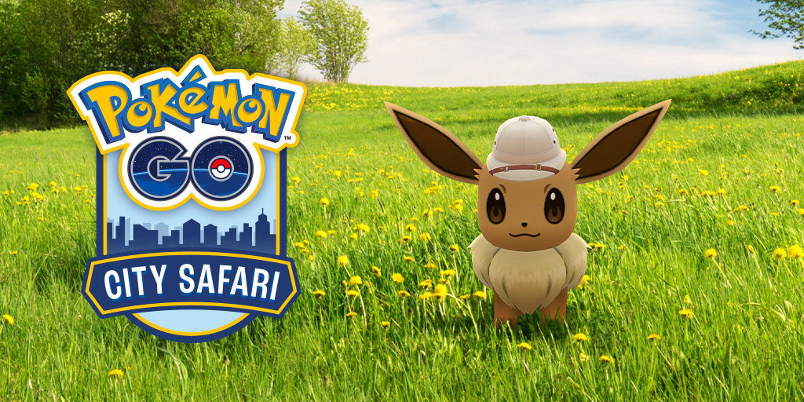

Pokémon GO City Safari is coming to Hong Kong!
Pokémon GO City Safari is coming to Hong Kong on December 7 and 8, 2024! Set off on a citywide adventure as you discover the vibrant stories, new friends, and exciting Pokémon waiting for you in Hong Kong!
Whether you’re a resident of Hong Kong or a first-time visitor, your Pokémon GO City Safari will take you across the city in an all-new way—from historic landmarks to local favorites, get ready for a taste of the city with Pokémon GO by your side!
USD10
(plus applicable taxes and fees) Please note: Final price may vary due to currency conversion rates and additional fees that may be charged by your credit card or bank.
Live Event Ticket
Buy ticketLOCATION
Hong Kong
DATE
Saturday, December 7, and Sunday, December 8, 2024
TIME
10:00 AM - 6:00 PM HKT
Trainers can either purchase a ticket for one day of the two-day event or a one-day ticket with an additional second day add-on. One-day tickets are USD10 (or the equivalent pricing tier in your local currency, plus any applicable taxes and fees) and are available for purchase on the Pokémon GO City Safari website. You will see “Tickets Available” next to the Pokémon GO City Safari: Hong Kong event ticket if it hasn’t sold out yet. Event gameplay will be available only for the date, time, and location specified on your ticket.
Note: Tickets to this event are nonrefundable (subject to applicable law and the exceptions set forth in the Terms of Service). Tickets are first come, first served and are available for purchase while supplies last.
Say “Hello” to Hong Kong in a citywide adventure!
Find a whole city of adventure waiting for you when you embark on a Pokémon GO City Safari! Encounter event-themed wild Pokémon throughout the city, complete City Safari–exclusive Special Research, and explore the rich culture in and around Hong Kong!
There’s no right or wrong way to enjoy a City Safari! This format allows Trainers to enjoy the citywide experiences at their own pace, catching Pokémon and making friends with other Trainers along the way.
Help Professor Willow research Pokémon across Hong Kong!
Ticket-holding Trainers can gear up to assist Professor Willow and Eevee in learning more about the Pokémon appearing during the event. And Eevee seems ready for a big adventure—Trainers will encounter Eevee wearing an explorer hat at the beginning of the City Safari Special Research!*
We encourage Trainers to travel and explore the city with their new Eevee as a buddy. What exciting discoveries will you make together?
Embark on an Eevee Explorers Expedition!
Don’t know where to start your adventure? With an entire city to explore, the Eevee Explorers Timed Research experience can help you set off on an exciting tour of notable locations, landmarks, and even some local favorite spots!
Visit locations across the city to complete this event-exclusive Timed Research, which awards an additional encounter with Eevee wearing an explorer hat with a Hong Kong Location Card at each location you visit!*
*Ticket holders can receive up to eight encounters with Eevee wearing an explorer hat as a part of the Eevee Explorers Timed Research in addition to the Eevee wearing an explorer hat received as a part of the event Special Research. Trainers who purchase the second day add-on can complete the Timed Research a second time for an additional eight encounters with Eevee wearing an explorer hat.
Map out your adventure via Campfire!
You can preview event locations via an interactive event map on Campfire! Plan your path in advance and make the most out of your day!
Field Research
Take part in event-exclusive Field Research and learn more about the exciting Pokémon appearing across Hong Kong!
Ticket Holder bonuses
Ticket-holding Trainers will receive the following bonuses and rewards between 10:00 a.m. and 6:00 p.m., anywhere in Hong Kong on their ticketed day!
Evolve your gameplay with ticket add-ons
In addition to our live events, we’re offering Trainers the chance to enhance their event experience with optional add-ons. Ticket add-ons are active for both days of Pokémon GO City Safari: Hong Kong (Saturday and Sunday). Trainers with the ticket add-ons will be able to take advantage of the bonuses even on the day that they aren’t taking part in ticketed gameplay.
Raid Lover